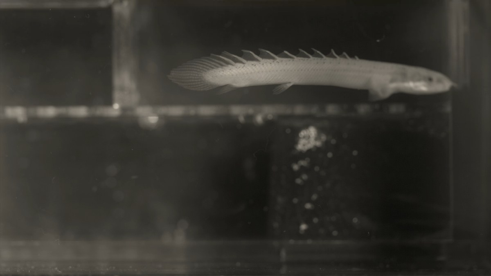
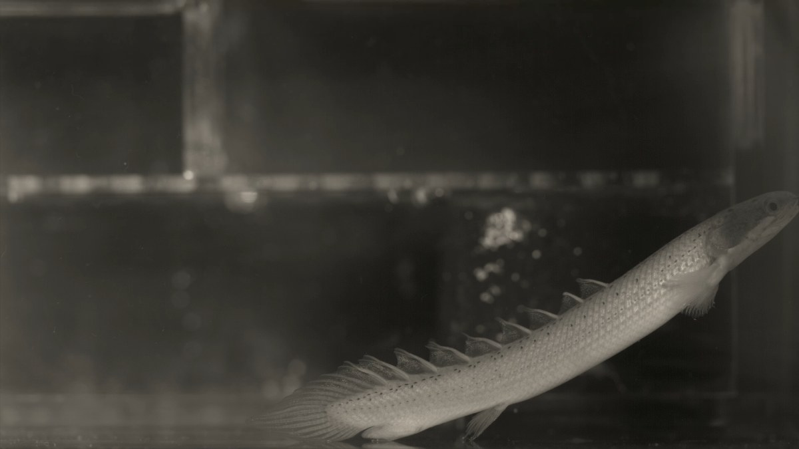
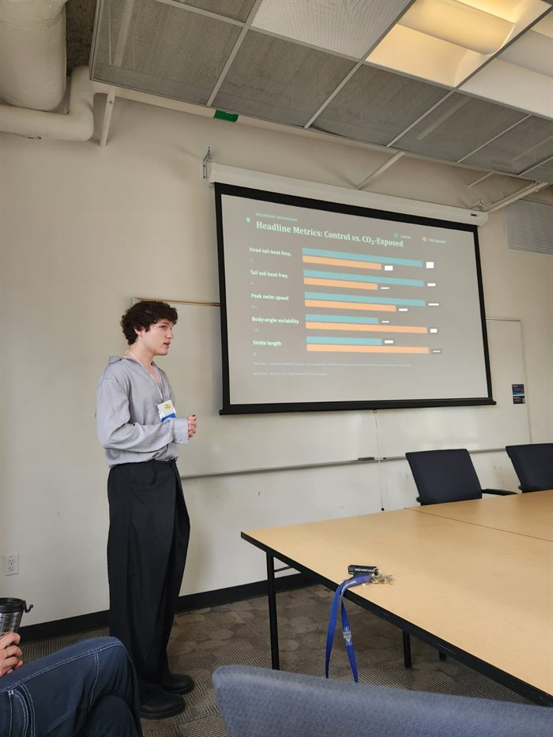
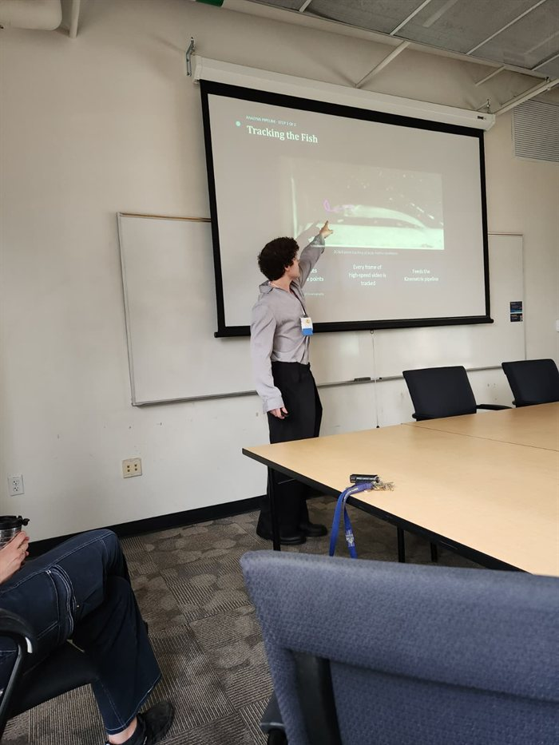

Tracked landmarks for one swimming sequence (XY and XZ planes): the raw input to the pipeline. Video and tracking: Yuchen Gong, Di Santo Lab.

High-speed video still, flow tank.
Walkthrough
Short tutorial on the experiment and the analysis pipeline.
Problem and approach
Ocean acidification may impair sensory processing in fish. I am testing whether it disrupts schooling, which depends on reading neighbors’ motion.
Hand-measuring swimming from hundreds of videos is slow and inconsistent between people, so I wrote a MATLAB pipeline: least-squares midline alignment, FFT interpolation, then the four metrics.
A flapping-foil array mimics the wake of schoolmates, so one focal fish responds to a controlled, repeatable “school”.
Lessons
Tracking quality limits everything downstream: occluded frames show up as NaNs, so the pipeline has to handle gaps instead of hiding them.
A shared tool only gets used if the input format is forgiving, so it accepts named columns or DeepLabCut-style indexing.
Funded through the URS David Marc Belkin Memorial Research Scholarship for Environment & Ecology ($6,500, Summer 2026).
🏆
Competitive Research Award
URS David Marc Belkin Memorial Research Scholarship
for Environment & Ecology — UC San Diego Undergraduate Research Hub
$6,500
Summer 2026 · 10-Week SRP
The Experiment
Q
Does elevated CO2 disrupt schooling behavior? Ocean acidification impairs sensory processing, and I'm testing whether it disrupts the collective movement decisions that underlie schooling.
Setup
Flapping foil array in a recirculating flow tank mimics the hydrodynamic signature of schoolmates, letting me observe one focal fish responding to a controlled artificial school.
Data
High-speed video captures each trial. I digitize landmark coordinates along the fish midline and feed them into my analysis pipeline.
What I Built
01
Midline alignment — least-squares rotation, snout at origin each frame
02
FFT interpolation — 5 to 10 landmarks upsampled to 200 continuous positions
Tail vector analysis — pitch, yaw, roll angles + live 3D animation
Lab
Di Santo Lab, UCSD
Species
Menidia menidia
Funding
URS Belkin — $6,500
Timeline
Summer 2026
Interactive Analysis Tool
⚠
Demo data only — not real experimental data.
The sample dataset is a fabricated Polypterus-style swimming sequence with realistic landmark positions and natural body motion — not a mathematical waveform. It includes a full landmark set (midline, paired pectoral and pelvic fins) similar in structure to real tracking data, with some NaN frames as expected from occlusion. All coordinate values are synthetic. This is also a rudimentary browser port of the MATLAB pipeline — results should be treated as illustrative only.
I built a browser port of my MATLAB kinematics toolkit for the Di Santo Lab. Upload your own CSV to run the full pipeline: midline alignment, FFT interpolation, kinematic metrics, and tail vector animation.
CSV format: Named landmark columns (snout_X, snout_Y, snout_Z) or DLC-indexed (Fish1_P1_x, Fish1_P1_y). Z columns optional. One row per frame.
Input
Choose a sample or upload a CSV.
Named format (3D):
snout_X,snout_Y,snout_Z,... -2.09,4.97,-7.97,...
DLC indexed:
frame,Fish1_P1_x,Fish1_P1_y,... 0,312.4,187.2,...
Run analysis to see kinematic results.
Select Root and Tip (named 3D data required)
Run kinematics first, then select root and tip points.
What Gets Fed Into the Tool
High-speed video of a swimming fish is recorded in a flow tank. Custom tracking software (DeepLabCut or manual) marks anatomical landmarks on every frame, producing XY (or XYZ) coordinate time-series. These spreadsheets are the raw input to the kinematics pipeline.
Lab FootageVideo stills & tracking data — Yuchen Gong, Di Santo Lab, UC San Diego
Poly 1 Lateral view — dorsal fin spines visible during hover

Poly 2 Lateral view — body posture during sustained hovering
Fish that swim in schools make rapid decisions: when to join, where to position themselves, and how to respond to their neighbors' movement. These decisions are driven by visual and hydrodynamic cues. Ocean acidification, caused by rising atmospheric CO2 dissolving into seawater, is known to impair sensory processing in fish. Whether elevated CO2 disrupts the decision-making underlying collective schooling is poorly understood.
Proposal: investigate how CO2-exposed Atlantic silversides (Menidia menidia) make schooling decisions in a controlled flow tank setting. Rather than using live schools, the design uses flapping foils that mimic the hydrodynamic signatures of schoolmates, creating a repeatable artificial school. This lets me isolate the behavior of a single focal fish responding to its simulated neighbors.
Analysis Pipeline
Midline alignment — I re-orient each frame with a least-squares rotation so the swimming axis runs parallel to X and the snout sits at the origin, which lets me compare frames regardless of heading
FFT interpolation — I upsample sparse midlines (5 to 10 tracked landmarks) to 200 continuous body positions per frame using zero-padded FFT, giving smooth waveform profiles without landmark-spacing artifacts
Tail-beat frequency — I extract the dominant beat frequency at the head and tail independently via a temporal FFT of the position time series
Amplitude envelope — I compute the mean lateral half-amplitude at each body position, giving a full head-to-tail profile and summary metrics
Propulsive wavelength — I estimate it from a spatial FFT of the amplitude profile
Body curvature — I compute three-point geometric curvature at each of the 200 body positions and average it across frames
Fin/tail vector analysis — for any pair of named landmarks, I compute pitch, yaw, and roll angles, tip trajectory, cumulative tip distance, and angular velocity, animated with a live 3D canvas
Summer Research Conference
I presented this research at the UC San Diego Summer Research Conference (SRC) on August 13, 2026.

Presenting at the SRC — August 13, 2026

Presenting at the SRC — August 13, 2026
Project Details
SPEC
Study organismAtlantic silverside (Menidia menidia)
RIG
SetupFlapping foil array in a recirculating flow tank
DATA
DataHigh-speed video, 3D body tracking
TOOL
ToolsMATLAB: FFT interpolation, kinematics, fin vector animation
FUND
FundingURS David Marc Belkin Memorial Research Scholarship — $6,500 (2026 SRP)